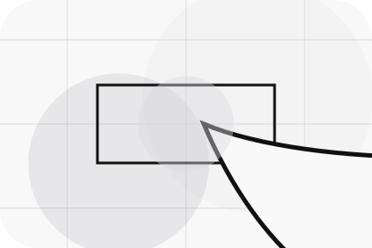
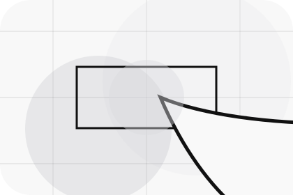
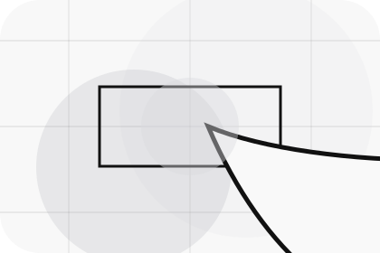
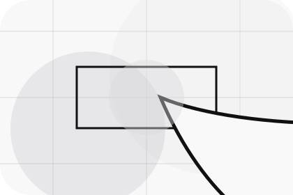
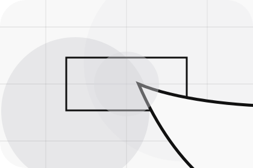
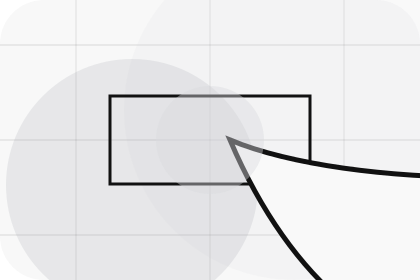

Context
Desire gives the page a specific angle instead of repeating the navigation label.
Automotive
Minimal EV showroom for purchase confidence and desire.

Home / 02
Desire adds dark context to the home route, using the minimal ev showroom structure to support purchase confidence and desire before visitors choose a next step.
Motor uses precise vehicle cards and focused copy to make the decision easier to scan, aligning the section with purchase confidence and desire rather than filling space.
Open DealerDesire gives the page a specific angle instead of repeating the navigation label.
The precise vehicle cards show what to compare, what to avoid, and what matters most for automotive, vehicles & mobility products visitors.
The final cue points to a useful internal route so the section keeps the journey moving.
Home / 03
Featured adds dark context to the home route, using the minimal ev showroom structure to support purchase confidence and desire before visitors choose a next step.
Motor uses precise vehicle cards and focused copy to make the decision easier to scan, aligning the section with purchase confidence and desire rather than filling space.
Open Vehicles

Featured gives the page a specific angle instead of repeating the navigation label.
Home / 04
Services explains the practical scope, best-fit situations, and expected outcome so automotive visitors can compare options without decoding jargon.
The section keeps the offer concrete: what is included, who it is best for, what decision it supports, and which linked route gives the deeper detail.
Open ServicesWho should use services and when it belongs in the home journey.

The practical benefit visitors should expect after choosing this route.

Where to compare details, pricing, support, or contact options before committing.
Stark vehicle product hero
Select the closest route and Motor keeps the next step, proof, and follow-up expectation aligned with purchase confidence and desire.
Home / 05
Finance adds dark context to the home route, using the minimal ev showroom structure to support purchase confidence and desire before visitors choose a next step.
Motor uses precise vehicle cards and focused copy to make the decision easier to scan, aligning the section with purchase confidence and desire rather than filling space.
Open FinanceFinance gives the page a specific angle instead of repeating the navigation label.
The precise vehicle cards show what to compare, what to avoid, and what matters most for automotive, vehicles & mobility products visitors.
The final cue points to a useful internal route so the section keeps the journey moving.
Home / 06
Workshop adds dark context to the home route, using the minimal ev showroom structure to support purchase confidence and desire before visitors choose a next step.
Motor uses precise vehicle cards and focused copy to make the decision easier to scan, aligning the section with purchase confidence and desire rather than filling space.
Open WorkshopMotor structures workshop around context, judgment, and a clear next route so visitors can compare the block quickly before they book a test drive.
Book Test DriveHome / 08
Reviews converts customer proof into a useful buying signal: the problem, the experience, and what changed afterward.
Proof stays believable by focusing on situation, service experience, and practical change rather than vague praise or unsupported results.
Open PartsWhat the visitor needed before choosing Motor, written with enough context to feel real.
How the service, product, or support felt during the process, not just that it was good.

What became easier to decide, complete, buy, book, or trust after the interaction.
Home / 09
Questions handles buying doubts directly so visitors can understand timing, fit, limits, and the safest next step.
Answers are short by design: enough to remove hesitation, not so much that the page turns into documentation before the visitor can act.
Open ContactQuestions gives the page a specific angle instead of repeating the navigation label.
The precise vehicle cards show what to compare, what to avoid, and what matters most for automotive, vehicles & mobility products visitors.

The final cue points to a useful internal route so the section keeps the journey moving.
Motor starts with a focused intake so the recommendation matches the visitor's context, risk, timing, and readiness.
Each route explains inclusions, exclusions, documents, timing, and the decision points that affect final delivery.
The theme uses minimal ev showroom, precise vehicle cards, and inventory filter, finance calculator, test-drive form rather than a shared template rhythm.
Stark vehicle product hero
Select the closest route and Motor keeps the next step, proof, and follow-up expectation aligned with purchase confidence and desire.
Home / 10
Motor closes the home route with a clear action, a quick reminder of the value, and a low-friction way to book a test drive.
Visitors who are ready can use the primary action. Visitors who are still comparing can scan the section links, proof, and support routes before they book a test drive.
Book Test DriveThe final block keeps the choice simple: act now, compare one more proof route, or send enough detail for a focused response.
Book Test Drivepurchase confidence and desire
A vehicle showroom site with precise white space, car-card rhythm, finance paths, and test-drive CTAs. Home ends with a direct path to book a test drive, plus enough context for visitors who still need to compare.
 Book Test Drive
Book Test Drive